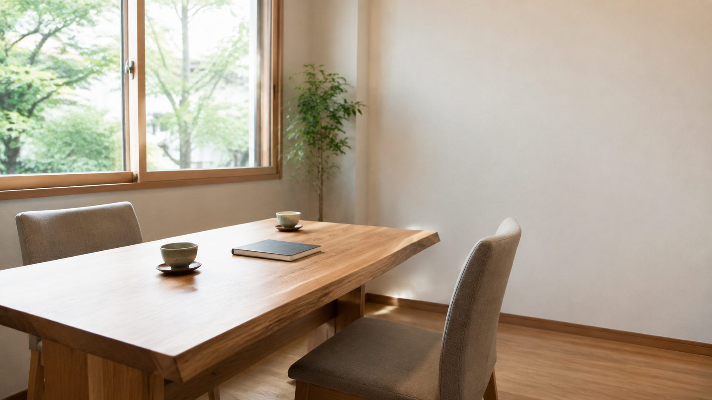
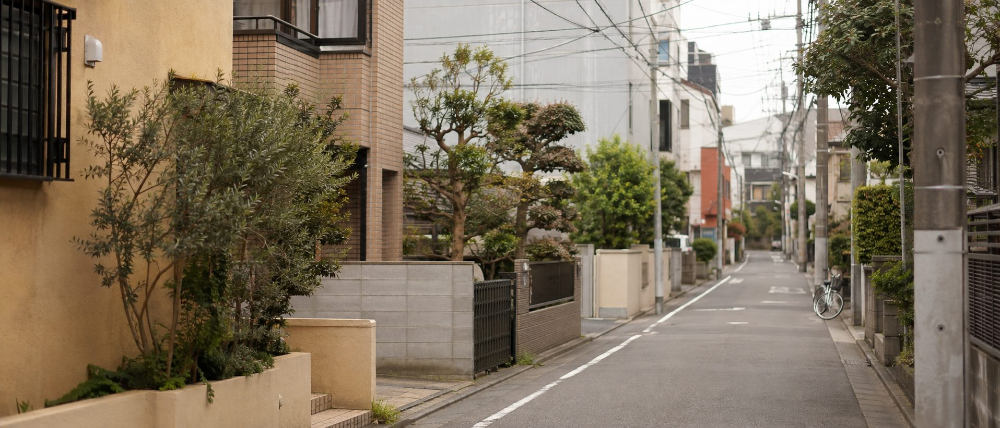
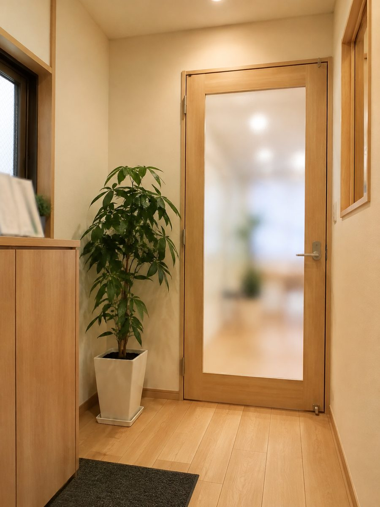
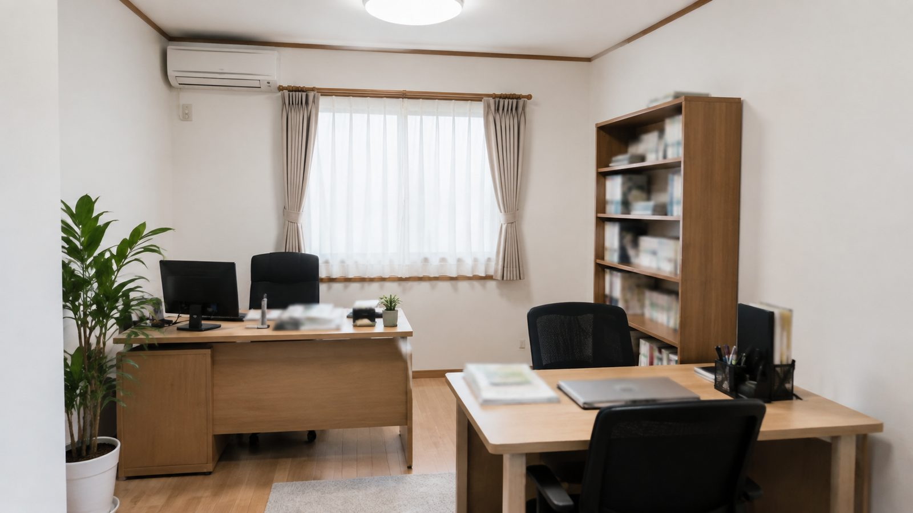
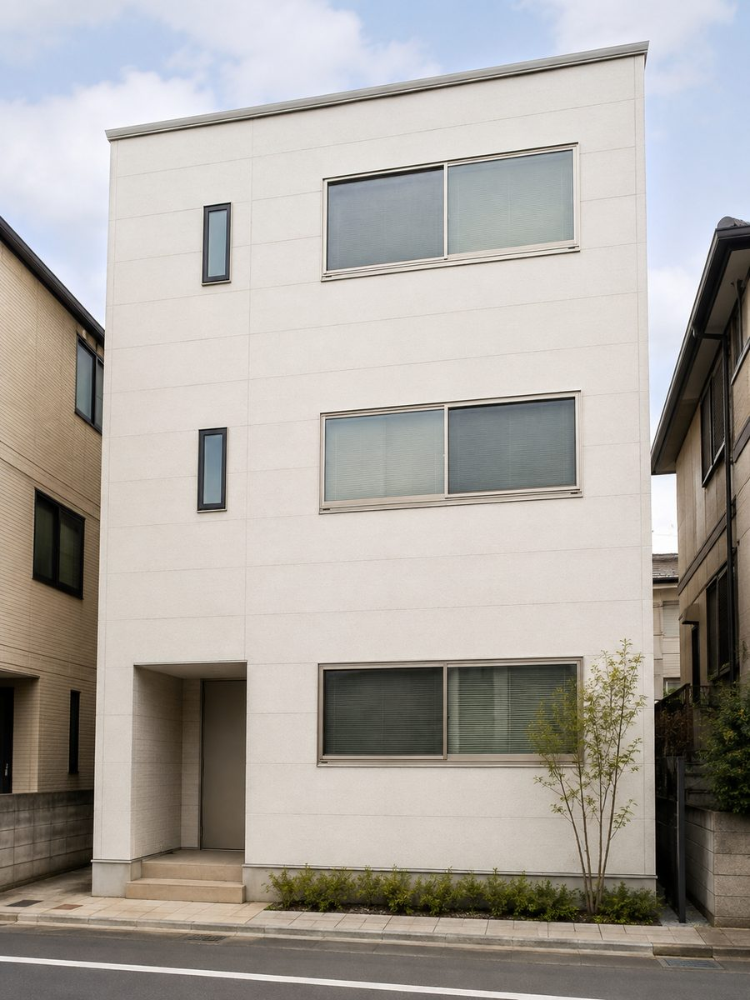
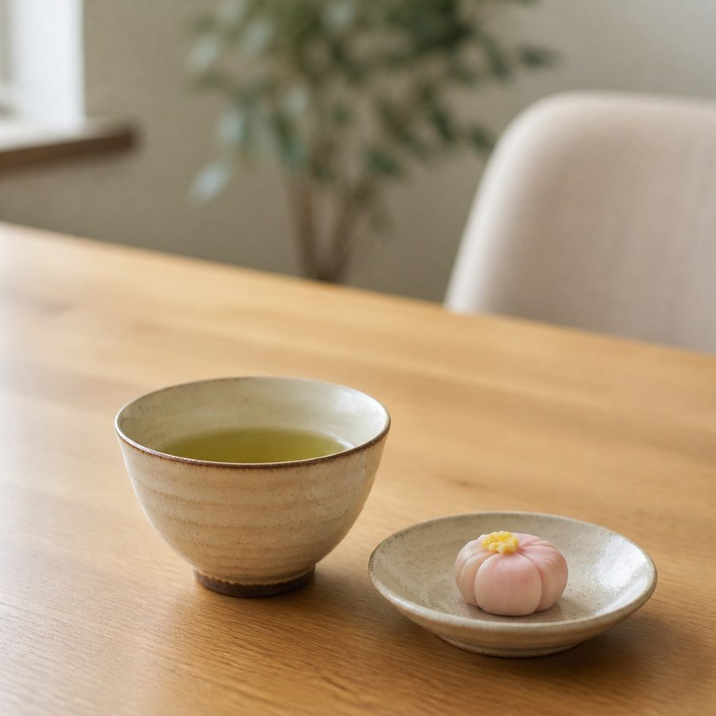

相続・遺言
亡くなられた方の戸籍を集めて相続人を確定し、遺産分割協議書の作成までをお手伝いします。元気なうちに遺言書を残しておきたい、というご相談も承ります。
- 標準処理期間
- 1〜2か月
- 報酬額（目安）
- 88,000円〜
- 初回相談
- 無料

相続・遺言と、建設業許可のご相談を承ります。報酬額と、終わるまでの日数は、お会いする前にこのページへ書いています。初回のご相談は無料です。

相続の手続きも、建設業の許可も、一生に何度も経験することではありません。「何から手をつければいいのか」の段階でお越しくださって構いません。
ご相談の前に、このページで報酬額と、終わるまでのおおよその日数をご確認いただけます。あとから費用が増えることのないよう、お引き受けする前に書面でお見積りをお渡しします。
ご来所が難しい場合は、ご自宅まで伺います。ご高齢のご家族に代わってお問い合わせいただくことも、よくあります。
行政書士橘 誠一
いまお受けしているのは、次の2つです。それぞれ「何をするのか」「どれくらいで終わるのか」「いくらかかるのか」を先に書いています。
亡くなられた方の戸籍を集めて相続人を確定し、遺産分割協議書の作成までをお手伝いします。元気なうちに遺言書を残しておきたい、というご相談も承ります。
新規の許可申請から、5年ごとの更新、決算のたびに必要な変更届までを承ります。要件を満たしているかどうかの確認だけのご相談も歓迎します。
この先、業務は増えていきます。
下の枠は、これから順次お受けする予定の業務です。準備が整いしだい、このページに並びます。

この街で、長く続ける事務所にします。
お車でお越しの方は、建物の前に2台分の駐車場がございます下の金額は税込の目安です。書類の数やご家族の人数で変わりますので、お引き受けする前に、必ず書面でお見積りをお渡しします。
お見積りのあとに金額が増えることはありません。増えるとすれば、ご依頼の範囲そのものが変わったときだけで、そのときは必ず先にご相談します。
| 業務 | 標準処理期間 | 含まれるもの | 報酬額（税込） |
|---|---|---|---|
| 相続人の調査（戸籍の収集） | 2〜4週間 | 戸籍の取り寄せ・相続関係説明図の作成 | 44,000円〜 |
| 遺産分割協議書の作成 | 2〜4週間 | 協議書の作成・押印のご案内 | 55,000円〜 |
| 相続手続き一式 | 1〜2か月 | 上記2つをまとめてお引き受けします | 88,000円〜 |
| 遺言書の作成支援 | 3〜4週間 | 文案の作成・公証役場との調整 | 99,000円〜 |
| 建設業許可（新規・知事） | 1〜3か月 | 要件確認・書類作成・提出代行 | 132,000円〜 |
| 建設業許可（更新） | 1〜2か月 | 書類作成・提出代行 | 66,000円〜 |
| 決算変更届 | 2〜3週間 | 書類作成・提出代行 | 44,000円〜 |
※ 上記のほかに、戸籍の取得費用や収入印紙・証紙などの実費がかかります。実費は立て替えたうえで、領収書を添えてご請求します。
※ 初回のご相談は無料です。お見積りだけをお聞きになって、お断りいただいても構いません。
お問い合わせから完了まで、5つの段階で進みます。いまどこにいるのかは、そのつどご連絡します。
お電話またはこのページのフォームから。ご家族からのご連絡でも構いません。
ご来所またはご自宅へ伺います。お話を伺って、必要な手続きをご説明します。
報酬額と実費、終わるまでの日数を書面でお渡しします。ここまで費用はかかりません。
ご納得いただけましたらご契約。書類の収集と作成を進めます。
提出と受理をご報告し、書類一式をお渡しします。その後のご質問も承ります。

建設会社の総務で18年間、許可の申請と更新を担当したのち、行政書士として開業しました。自分が申請する側で困ったことを、依頼される側から減らしたいと考えています。
相続については、両親の手続きを自分で進めた経験があります。書類の多さよりも、何をどの順番でやるのかが分からないことのほうが負担でした。そこを引き受けます。
日本行政書士会連合会 登録／○○県行政書士会 所属




お茶をお出しします。
まずは世間話からで構いません。
ここから下は、平野から
制作についてのご説明です。
最初の2業種だけを作り込むと、3業種目を足すたびに制作者へ依頼が必要になります。そうならないように、取扱業務を「1件ずつ追加できるまとまり」として作ります。左が管理画面、右が実際のページです。入力して押してみてください。
2 / 10 業種
追加したその場でトップページの一覧にも並び、業務ごとのページも同時にできます。制作会社への連絡も、費用も、必要ありません。
お問い合わせの多くはスマートフォンから届きます。文字を小さくして詰め込むのではなく、縦に並べ替えて、指で押せる大きさのまま出します。画面の下には、電話とお問い合わせのボタンが常に出ています。
このページ自体をスマートフォンの幅で表示しています。
一般的なサイトより2段階大きく、行の間隔も広く取っています。老眼鏡なしで読める大きさが基準です。
純白に薄いグレーの文字は、明るい場所で読めなくなります。紙に近い色にして、文字は濃く置いています。
ボタンと電話番号は、指で押し外さない大きさにしています。電話番号はタップでそのまま発信します。